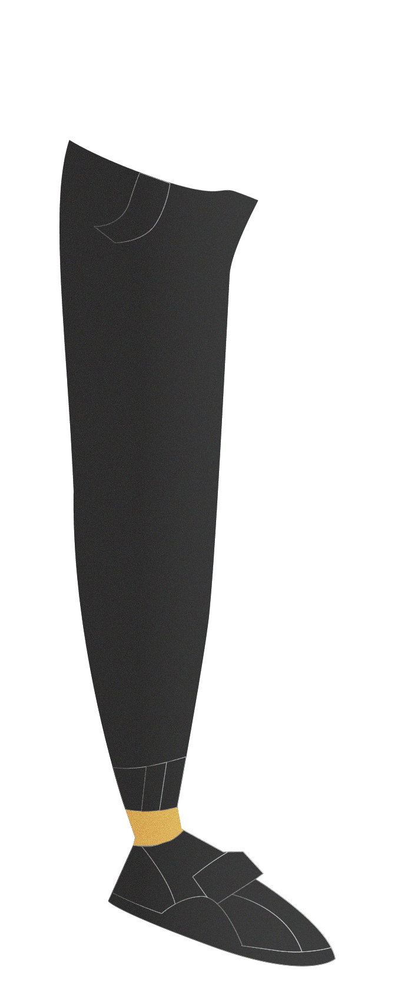
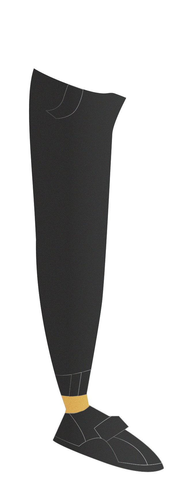
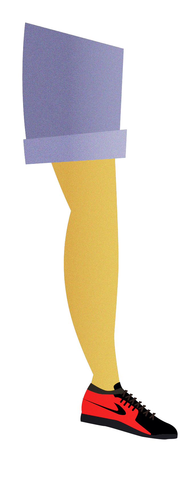
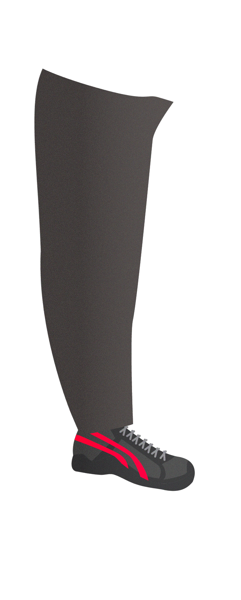
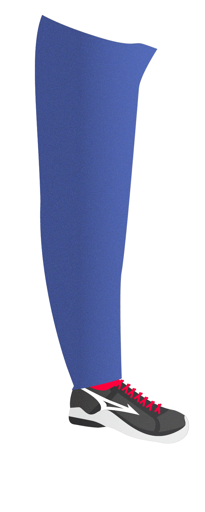
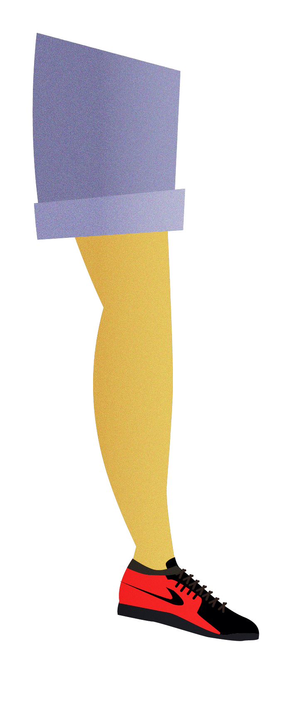
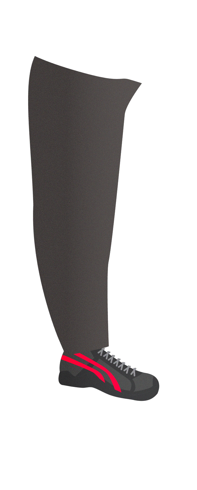
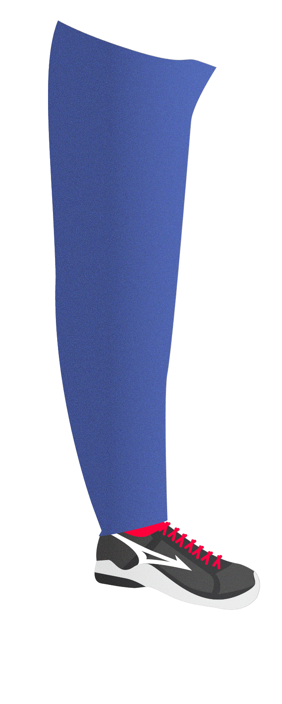

 






劉雨潔 光電
這傢伙睡眠時間比朕還久是怎樣(°ﾛ°٥)
鏟屎官不鏟屎還來跟我搶罐罐吃
還有沒有王法啦！？
來人啊！拖出去斬了！
吳俊德 工設
一臉奴才身上卻沒有奴才味，
來過去裝個可愛搞不好就會被抱回去侍奉了喵。
不過看起來好像很忙，如果運氣不好會不會連罐罐都沒得吃，
看來朕還是再另尋獵物吧喵。
潘星羽 電機
走走停停，忽快忽慢，有時還比手劃腳，
明明旁邊都沒有什麼東西，不知道腦袋裡在想什麼喵~
鍾佳熙 電機
一位皮膚黑黑帶著眼鏡的電機系男孩。
平日看起來懶懶散散~
下課後常常拎著球拍到敬業網球場運動的網球上癮者。
張宇劭 電機
這人是怎麼回事喵！？黑眼圈都這麼重，肯定是經常熬夜喵！
看起來一臉頹廢，散發著厭世的氛圍，連朕都快要被他影響了。
朕還是離遠些好了喵~
謝宗霖 歷史
這個鏟屎的長的也太高了吧！
但他好像也只有長的高這項優點而已…
作為朕高高在上的王位剛剛好
李志彥 歷史
建構中...
恩...很神祕呢喵~
朕以為人類都是奇葩喵~
一位喵皇趁著鏟屎官不在，微服出巡的故事。
"朕日理萬機，居尊而鑒卑，無時不以天下蒼生為念。
故擇日不如撞日，今日便化身布衣走遍天下，望此程能有一番收穫"
且看 祂與子民同胞們的相識相知，
而 祂又會如何評價世俗的塵囂呢？